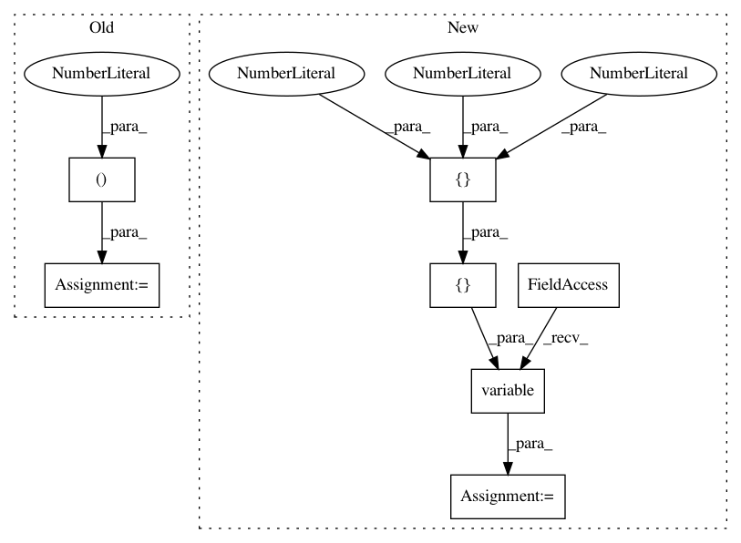

df93c4e61e7ca1db25f1ee346ac0516685498b02,tests/backend/test_tensorflow_backend.py,,test_overlapping,#,86
Before Change
def test_overlapping():
stride = 16
features = (14, 14)
img_info = (224, 224, 1)
gt_boxes = numpy.zeros((91, 4))
gt_boxes = keras.backend.variable(gt_boxes)
all_anchors = keras_rcnn.backend.shift(features, stride)
After Change
def test_overlapping():
stride = 16
features = (14, 14)
img_info = keras.backend.variable([[224, 224, 3]])
gt_boxes = numpy.zeros((91, 4))
gt_boxes = keras.backend.variable(gt_boxes)
img_info = img_info[0]
all_anchors = keras_rcnn.backend.shift(features, stride)
inds_inside, all_inside_anchors = keras_rcnn.backend.inside_image(
In pattern: SUPERPATTERN
Frequency: 3
Non-data size: 7
Instances
Project Name: broadinstitute/keras-rcnn
Commit Name: df93c4e61e7ca1db25f1ee346ac0516685498b02
Time: 2017-08-15
Author: allen.goodman@icloud.com
File Name: tests/backend/test_tensorflow_backend.py
Class Name:
Method Name: test_overlapping
Project Name: broadinstitute/keras-rcnn
Commit Name: ebae4ed91a657b1eac389a6d380c165a295cd822
Time: 2018-01-30
Author: allen.goodman@icloud.com
File Name: tests/layers/losses/test_rcnn.py
Class Name: TestRCNN
Method Name: test_call
Project Name: broadinstitute/keras-rcnn
Commit Name: b5f576591e59ea7ca550cd51a08f96d37eb0ebf3
Time: 2017-08-18
Author: jyhung@broadinstitute.org
File Name: tests/layers/test_losses.py
Class Name:
Method Name: test_call_classification